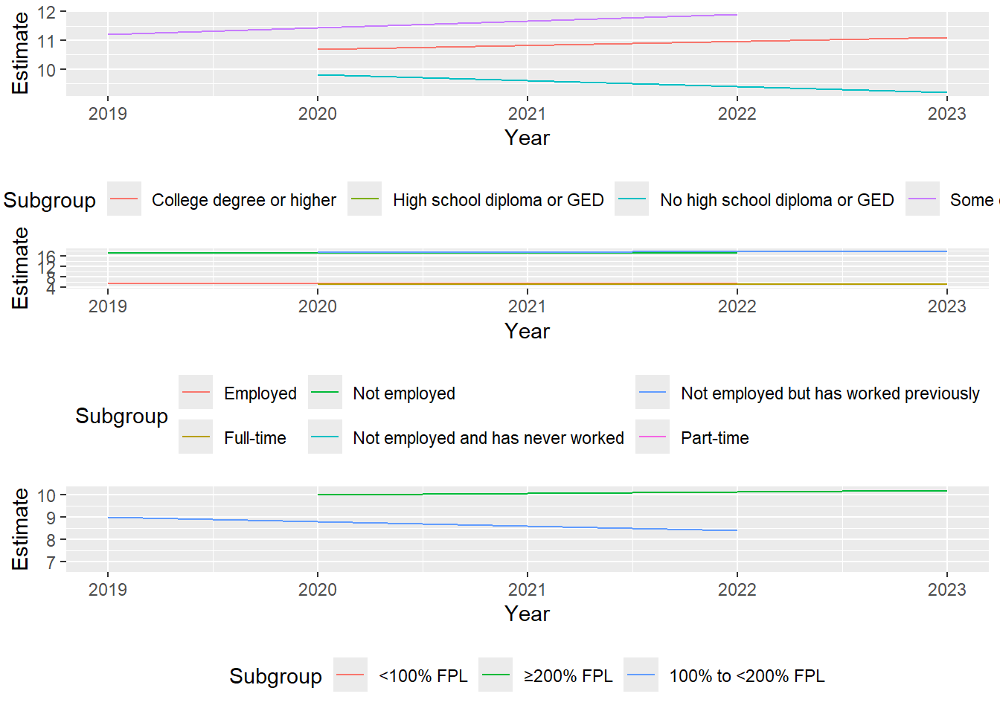

Rows: 970 Columns: 34
── Column specification ────────────────────────────────────────────────────────
Delimiter: ","
chr (12): IndicatorCode, Indicator, ValueType, ParentLocationCode, ParentLo...
dbl (2): Period, FactValueTranslationID
lgl (19): IsLatestYear, Dim1 type, Dim1, Dim1ValueCode, Dim2 type, Dim2, Di...
dttm (1): DateModified
ℹ Use `spec()` to retrieve the full column specification for this data.
ℹ Specify the column types or set `show_col_types = FALSE` to quiet this message.
USOperationalPolicy <- OperationalPolicy|>filter(Location=="United States of America")MortalityIncidenceMerge <-read_csv("mortality_incidence_merge.csv")
Rows: 186 Columns: 8
── Column specification ────────────────────────────────────────────────────────
Delimiter: ","
chr (1): Country
dbl (7): Incidence_Number, Incidence_rate, Incidence_cum_risk_74, Mortality_...
ℹ Use `spec()` to retrieve the full column specification for this data.
ℹ Specify the column types or set `show_col_types = FALSE` to quiet this message.
Rows: 380 Columns: 5
── Column specification ────────────────────────────────────────────────────────
Delimiter: ","
chr (4): Group, Subgroup, Flag, Estimate
dbl (1): Year
ℹ Use `spec()` to retrieve the full column specification for this data.
ℹ Specify the column types or set `show_col_types = FALSE` to quiet this message.
#note crude rate is per 100,000 in population #no visible correlation# plot by region of the world# operational policy may have adequate treatment to prevent moratality
#from chat gpt - be carefulcut <-factor(AllCancerData_lumps_new_4$Year) # Replace with your actual factor variable name# Create a custom color palette with as many colors as there are levels in 'cut'color_palette <- RColorBrewer::brewer.pal(length(unique(cut)), "Reds")# Now, use the 'cut' variable to color the pairs plotpairs(table(AllCancerData_lumps_new_4[, c(1, 3, 6)]), col = color_palette[cut]) # Assign color based on 'cut' factor
ggplot(AllCancerData_lumps_new_4,aes(Year,Estimate, color = Subgroup))+geom_line()+facet_wrap(~Group)
The following object is masked from 'package:dplyr':
combine
gridExtra::grid.arrange(Ed,Emp,Pov, nrow =3)

AllCancerData_lumps_age <- AllCancerData_lumps|>filter(Group =="Age groups with 65 years and older")|> dplyr::select(Subgroup,Year,Estimate,Estimate_Level)library(redav)redav::draw_biplot(AllCancerData_lumps_age)
AgeGroups_Mosaic <- AllCancerData_lumps |>filter(Group ==c("Age groups with 65 years and older", "Age groups with 75 years and older"))
Warning: There was 1 warning in `filter()`.
ℹ In argument: `Group == c("Age groups with 65 years and older", "Age groups
with 75 years and older")`.
Caused by warning in `Group == c("Age groups with 65 years and older",
"Age groups with 75 years and older")`:
! longer object length is not a multiple of shorter object length